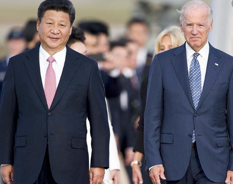
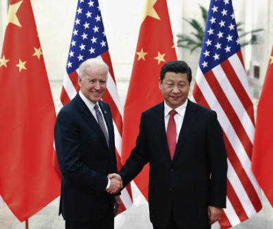

Joe Biden s'engage à souder
les relations avec la Chine
Alors que la communauté internationale
s’adapte et effectue des transitions après
la récente élection présidentielle,
la politique étrangère américaine subit
un changement radical. Le président.
Joe Biden a hérité d'un monde bien
différent de celui qu'il connaissait
il y a quatre ans en tant que vice-président,
et ces différences ont été amplifiées
en raison des défis sans précédent
de la pandémie mondiale actuelle.
Les relations de l’Amérique avec
la Chine ne font pas exception.

Actuellement, nos relations bilatérales
avec la Chine semblent s'effilocher.
Alors que certains peuvent considérer
une Chine affaiblie comme une aubaine
pour les États-Unis, en réalité,
cela équivaudra probablement à une
économie mondiale plus faible,
sapant les intérêts américains à long terme.
Il est essentiel que l'administration Biden
se souvienne que les intérêts des États-Unis,
de la Chine et de la communauté internationale
sont mieux servis lorsqu'il existe une
coopération solide dans des domaines d'intérêt mutuel.
.